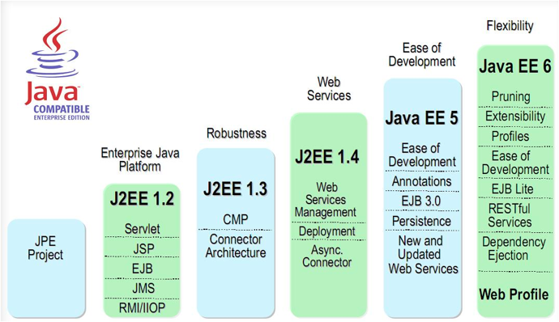
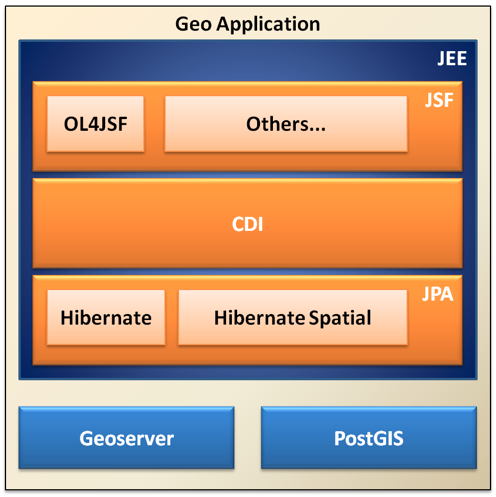

Desenhando a Arquitetura da Aplicação (GEO - JEE6)¶
Contents
Nesse capítulo vamos fazer um breve comentário sobre alguns recursos disponíveis no JEE 6, além de propor uma arquitetura simples, porém funcional, para elaboração de SIGs Web.
Java Enterprise Edition¶
{kind=link}
Podemos perceber pela imagem acima que o JEE vem evoluindo consideravelmente desde sua primeira versão em meados de 1999. Dessa forma, a versão JEE 6 carrega consigo muita maturidade, obtida ao longo de todos esses anos.
A cada versão torna-se mais fácil se desenvolver com JEE. As anotações introduzidas no JEE 5, foram o primeiro passo para viabilizar a adoção da tecnologia em massa, pois, até então, desenvolver em JEE era um grande martírio: dezenas de arquivos de configuração, necessidade de criação de várias classes somente para “agradar” a especificação, etc.
No nosso minicurso, não utilizaremos todos os recursos da nova especificação. Mas não se preocupem, o que veremos aqui será o suficiente para o desenvolvimento de aplicações reais. Além disso, não utilizaremos um servidor JEE completo como o JBoss ou Glassfish, por exemplo, utilizaremos o bom e velho Tomcat, ou seja, é muito fácil arranjar planos de hospedagem a um preço acessível.
Arquitetura de nossa aplicação¶
A figura abaixo demonstra de forma sucinta a arquitetura que elaboramos para nossa aplicação:
{kind=link}
Vamos agora dar uma visão geral das responsabilidades de cada camada.
Java Server Faces - JSF¶
É nessa camada onde desenvolveremos as interfaces com o usuário. A tecnologia JSF proporciona uma melhor separação entre as camadas, tendo em vista que o código responsável pelo layout da página (.xhtml) e as regras do negócio (.java) residem em locais distintos.
Além disso, o JSF é uma tecnologia orientada a componentes. Sendo assim, a reutilização de códigos UI é levada a patamares incríveis, onde quase esquecemos da natureza request/response do protocolo HTTP. Com JSF passamos a programar orientado a eventos (Quem não lembra dos tempos do VB/Delphi? :) ).
Para exemplificar, vejamos o exemplo abaixo. Nele o usuário digita o nome e clica no botão “Diga olá”.

A partir desse momento é executada uma ação no servidor e retornada a mensagem para o usuário.

Hora de olhar o código! hellojsf.xhtml:
1 2 3 4 5 6 7 8 9 10 11 12 13 14 15 16 17 18 19 | <!DOCTYPE html PUBLIC "-//W3C//DTD XHTML 1.0 Transitional//EN" "http://www.w3.org/TR/xhtml1/DTD/xhtml1-transitional.dtd">
<html xmlns="http://www.w3.org/1999/xhtml" xmlns:h="http://java.sun.com/jsf/html"
xmlns:f="http://java.sun.com/jsf/core"
xmlns:ui="http://java.sun.com/jsf/facelets"
xmlns:m="http://www.ol4jsf.org">
<h:head>
</h:head>
<body>
<h1>Exemplo JSF</h1>
<h:form prependId="false">
Nome: <h:inputText value="#{helloJSF.nome}" />
<h:commandButton value="Diga olá" action="#{helloJSF.sayHello}">
</h:commandButton>
<br/>
<h:outputText id="output" binding="#{helloJSF.output}" />
</h:form>
</body>
</html>
|
HelloJSF.java:
1 2 3 4 5 6 7 8 9 10 11 12 13 14 15 16 17 18 19 20 21 22 23 24 25 26 27 28 29 30 31 32 33 34 35 36 37 38 | package org.latinoware.geodojo.beans;
import javax.enterprise.inject.Model;
import javax.faces.component.UIOutput;
/**
* Bean para exemplificar o modelo orientado a eventos do JSF
*
* @author ranophoenix
*
*/
@Model
public class HelloJSF {
private String nome;
private UIOutput output;
public String getNome() {
return nome;
}
public void setNome(String nome) {
this.nome = nome;
}
public UIOutput getOutput() {
return output;
}
public void setOutput(UIOutput output) {
this.output = output;
}
public void sayHello() {
output.setValue("Olá " + nome + "!!!");
}
}
|
Simples e organizado! Não quer submeter a página? Prefere Ajax? Então lá vai:
1 2 3 4 5 6 7 8 9 10 11 12 13 14 15 16 17 18 19 20 | <!DOCTYPE html PUBLIC "-//W3C//DTD XHTML 1.0 Transitional//EN" "http://www.w3.org/TR/xhtml1/DTD/xhtml1-transitional.dtd">
<html xmlns="http://www.w3.org/1999/xhtml" xmlns:h="http://java.sun.com/jsf/html"
xmlns:f="http://java.sun.com/jsf/core"
xmlns:ui="http://java.sun.com/jsf/facelets"
xmlns:m="http://www.ol4jsf.org">
<h:head>
</h:head>
<body>
<h1>Exemplo JSF</h1>
<h:form prependId="false">
Nome: <h:inputText value="#{helloJSF.nome}" />
<h:commandButton value="Diga olá" action="#{helloJSF.sayHello}">
<f:ajax execute="@form" render="output" />
</h:commandButton>
<br/>
<h:outputText id="output" binding="#{helloJSF.output}" />
</h:form>
</body>
</html>
|
Bastou adicionar a linha 14!
No nosso pequeno projeto geo, além da biblioteca JSF padrão utilizaremos o conjunto de componentes OL4JSF. Ele encapsula muito do código necessário para a renderização de mapas nos navegadores. Em um projeto maior, provavelmente utilizaremos também outras bibliotecas, como: PrimeFaces, OpenFaces e RichFaces.
Context and Dependency Injection - CDI¶
O CDI é tão simples que utilizamos no exemplo anterior quase sem perceber. Os menos atentos talvez nem tenham percebido a existência da anotação @Model. Sabe o que aconteceu pela simples presença dessa anotação? Basicamente:
- A classe HelloJSF passou a ficar disponível nas páginas JSF através do nome “#{helloJSF}” ;
- A classe ganhou o escopo de requisição.
Tudo isso porque a anotação @Model é definida da forma:
1 2 3 4 5 6 7 8 9 10 11 | @Named
@RequestScoped
@Stereotype
@Target({TYPE, METHOD})
@Retention(RUNTIME)
public @interface Model {}
|
Certo! Já entendemos a primeira parte do nome CDI: “Context”. Por padrão, a especificação define, a princípio, 4 contextos: @ApplicationScoped, @SessionScoped, @RequestScoped e @ConversationScoped. Mas nada impede que você desenvolvedor crie o seu próprio contexto.
E quanto ao “Dependency Injection”? Essa parte auxilia muito os arquitetos na elaboração de camadas menos acopladas e mais coesas. Explicando de forma bastante sucinta, isso significa que declaramos as nossas variáveis, mas deixamos a instanciação por conta do CDI.
Por exemplo, nos nossos exemplos de JPA, precisaremos obter um EntityManager para realizar operações sobre os dados no SGBD. Os nossos beans precisam somente fazer assim:
1 2 3 4 5 6 7 | @RequestScoped
@Named
public class PontoManager {
@Inject
private EntityManager em;
}
|
Lembre-se que estamos utilizando o Tomcat, não podemos utilizar a anotação PersistenceContext para injetar o EntityManager. Então qual a “mágica”? Declaramos um “producer” que o CDI utilizará para instanciar o nosso objeto quando necessário.
1 2 3 4 5 6 7 8 9 10 11 12 13 14 15 16 17 18 19 | @ApplicationScoped
public class EntityManagerProducer {
private EntityManagerFactory emf;
@PostConstruct
public void createEntityManagerFactory() {
emf = Persistence.createEntityManagerFactory("geodojodbspatial");
}
@Produces
public EntityManager createEntityManager() {
return emf.createEntityManager();
}
public void disposeEntityManager(@Disposes EntityManager em) {
em.close();
}
}
|
Uau! Quanta informação! Vamos por partes:
- Criamos uma classe como escopo de aplicação (@ApplicationScoped);
- Após a criação dessa classe pelo CDI, @PostConstruct, obtemos o EntityManagerFactory e guardamos numa variável privada;
- Ao precisar injetar alguma classe do tipo EntityManager, durante o deploy da aplicação, tenta resolver a dependência e encontra um método anotado com @Produces retornando o mesmo tipo a ser injetado;
- Como não declaramos nenhum escopo, o EntityManager é colocado no escopo @Dependent, ou seja, o seu ciclo de vida vai depender do objeto no qual foi injetado;
- Ao fim do ciclo de vida, o CDI chama o método que tem a anotação @Disposes no tipo que foi injetado e fecha o entityManager.
O CDI possui diversos recursos que tornam a vida do arquiteto mais fácil: Interceptors, decorators, qualifiers, stereotypes, etc. Vale a pena dar uma leitura na documentação.
Java Persistence Api - JPA¶
Quem nunca ouviu falar do Hibernate? É isso mesmo. Essa especificação veio padronizar aquilo que muitos desenvolvedores já utilizavam há bastante tempo. Hoje, o Hibernate é somente uma das possíveis implementações de JPA.
Certo, a utilização do Hibernate eu até compreendo, por que apareceu esse tal de hibernate-spatial? A JPA resolve muito bem o mapeamento objeto-relacional de tipos convencionais dos SGBDs (varchar, numeric, date, etc), porém em aplicações geoespaciais precisamos lidar com estruturas de dados geométricas e é aí onde a Java Persistence Api não é mais suficiente. Precisamos de alguma forma mapear esses tipos em nossas classes e o Hibernate fornece uma anotação (@Type) que nos permite isso.
Já o hibernate-spatial, fornece um dialeto do hibernate responsável por reconhecer esses novos tipos e fazer o “trabalho sujo” para nós, gerando os SQLs necessários e tornando a tão sonhada independência de banco menos traumática.
Vejamos uma tabela PostgreSQL/PostGIS:
1 2 3 4 5 | create table ponto (
id serial primary key,
nome varchar(50),
localizacao geometry
);
|
Podemos fazer o mapeamento da seguinte forma:
1 2 3 4 5 6 7 8 9 10 11 12 13 14 15 16 17 18 19 20 21 22 23 24 25 26 27 28 29 30 31 32 33 34 35 36 37 38 39 40 41 42 43 44 45 46 47 48 49 50 51 52 53 54 55 56 57 58 59 60 61 62 63 64 65 66 67 68 69 70 71 72 | @SuppressWarnings("serial")
@Entity
public class Ponto implements Serializable {
@Id
@GeneratedValue
public Long id;
public String nome;
@Type(type = "org.hibernatespatial.GeometryUserType")
public Point localizacao;
public Point getLocalizacao() {
return localizacao;
}
public void setLocalizacao(Point localizacao) {
this.localizacao = localizacao;
}
public Long getId() {
return id;
}
public void setId(Long id) {
this.id = id;
}
public String getNome() {
return nome;
}
public void setNome(String nome) {
this.nome = nome;
}
@Override
public int hashCode() {
final int prime = 31;
int result = 1;
result = prime * result + ((id == null) ? 0 : id.hashCode());
result = prime * result + ((nome == null) ? 0 : nome.hashCode());
return result;
}
@Override
public boolean equals(Object obj) {
if (this == obj)
return true;
if (obj == null)
return false;
if (getClass() != obj.getClass())
return false;
Ponto other = (Ponto) obj;
if (id == null) {
if (other.id != null)
return false;
} else if (!id.equals(other.id))
return false;
if (nome == null) {
if (other.nome != null)
return false;
} else if (!nome.equals(other.nome))
return false;
return true;
}
}
|
Observem que, com exceção do tipo Point, todos os atributos são mapeados com anotações JPA padrão. Entretanto, para mapearmos o tipo geométrico, nesse caso Point, precisamos recorrer à extensão @Type disponibilizada pelo Hibernate.
OK! Como JSF, CDI e JPA fechamos a parte JEE de nossa aplicação. Agora restam somente dois artefatos: o GeoServer e o Postgis.
Geoserver¶
Não detalharemos o geoserver, pois ele será visto em capítulos posteriores. Mas para atiçar a curiosidade, podemos dizer que ele é responsável por disponibilizar os mapas, obtidos através de diversas origens, em formatos padronizados e reconhecíveis pelo OL4JSF. Achou interessante? Espere então só mais um pouco para ver o que esse cara é capaz de fazer.